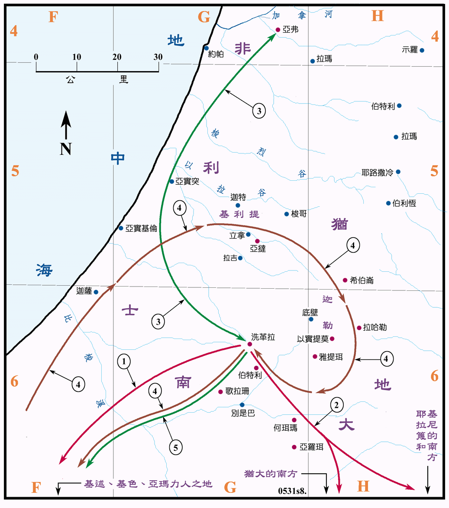

行动线说明
| 序号 | 圣经 | 说明 |
|---|---|---|
| 1 | 撒上27:7-9 | 大卫在洗革拉时，常去侵夺南方基述人、基色人和亚玛力人之地。 |
| 2 | 撒上27:10-12 | 但是大卫却告诉亚吉王说是攻打犹大南方、耶拉篾南方和基尼的南方。 |
| 3 | 撒上28:1-2，29:1-11 | 大卫随非利士人前往亚弗，去攻打以色列人，但非利士人不信任大卫，大卫就回到洗革拉。 |
| 4 | 撒上30:1-3 | 亚玛力人乘大卫去亚弗之时，侵夺犹大、南地、迦勒、基利提等地，又攻破洗革拉，掳去了居民和大卫的家人。 |
| 5 | 撒上30:9-20 | 大卫追击亚玛力人，夺回被掳掠去的人民和财物。 |
| 撒上30:26-31 | 大卫分送礼物给邻城。 |
大卫在洗革拉住的期间，为了扩张势力，他经常侵夺南方迦南人之地，但对迦特王亚吉都说是常攻打以色列南方之地，使亚吉误以为大卫真的与以色列人为敌。因此亚吉相信他，但仍得不到其他非利士王的信任，而得以免了参与和扫罗在基利波山作战的行列。
扫罗曾受命要灭绝亚玛力人，但并没有认真的执行，此时亚玛力人又已再行壮大，再度抢夺犹大地和南地，烧了洗革拉，掳去居民和财物，大卫的家人也同时被掳。大卫从亚弗回来，已是人困马疲，但仍奋力追剿亚玛力人，结果大胜，追回被掳的人民和他的家人，并且掳掠了大量的财物，他把掳来的财物分送给附近与他友好的城镇，足见他影响之广。